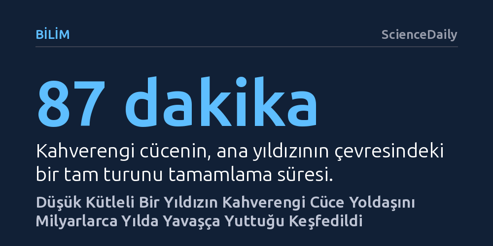

BILIM · ScienceDaily · 2026-10-11
Gökbilimciler, Dünya'dan 300 ışık yılı uzakta bir yıldızın, yoldaşı olan kahverengi cüceden milyarlarca yıl boyunca istikrarlı biçimde kütle çektiği benzersiz bir ikili sistem keşfetti. Bu bulgu, düşük kütleli gökcisimlerinin birbirini aniden yutmadan çok uzun sürede tüketebildiğini ilk kez kanıtlıyor.
Gezegenlerin ve kahverengi cücelerin ana yıldızlarıyla olan yakın temaslarının her zaman ani bir yutulmayla sonuçlanmak zorunda olmadığını, milyarlarca yıl süren dengeli bir madde aktarımıyla da evrilebileceğini gösteriyor.

Evrende yıldızlar ile çevrelerindeki cisimlerin ilişkisi çoğunlukla iki uç senaryoyla bilinir: Ya Dünya ile Güneş arasındaki gibi milyarlarca yıl boyunca korunan kararlı yörüngeler ya da bir gökcisminin yıldızına tehlikeli biçimde yaklaşarak kısa sürede yutulduğu yıkıcı felaketler. Ancak MIT liderliğindeki uluslararası bir astronomi ekibi, bu iki zıt durumun tam ortasında yer alan ve daha önce hiç gözlemlenmemiş yepyeni bir kozmik ilişki biçimi keşfetti. Samanyolu içinde, Dünya'dan yaklaşık 300 ışık yılı mesafede bulunan ZTF J0440+2325 kodlu sistemde, küçük bir yıldız yoldaşı olan kahverengi cüceyi tek seferde yok etmek yerine, maddesini milyarlarca yıla yayılacak bir tempoda yavaş yavaş kendi bünyesine katıyor.
Sistemin merkezindeki yıldız Jüpiter'in yaklaşık 85 katı kütleye sahipken, ona eşlik eden kahverengi cücenin kütlesi 25 Jüpiter kütlesi olarak ölçülüyor. Gezegenlerden çok daha ağır olan fakat merkezinde hidrojen füzyonunu başlatamadığı için gerçek bir yıldıza dönüşemeyen bu kahverengi cüce, yıldızının çevresindeki tam bir turunu yalnızca 87 dakikada tamamlıyor. Bu aşırı yakınlık öyle bir boyutta ki ikilinin tüm yörüngesi Güneş'in çapının içine rahatlıkla sığabiliyor. Aralarındaki bu dar mesafe, bilinen şiddetli çarpışmaların aksine, düzenli ve zamana yayılan bir kütle transferine imkân tanıyor.
Bu sıra dışı sistemin varlığı, Kaliforniya'daki Palomar Gözlemevi'nde gökyüzünü sürekli tarayan Zwicky Geçici Gökyüzü Tesisi'nin (ZTF) kaydettiği sıra dışı bir sinyalle ortaya çıktı. Astronomlar gökcisimlerindeki parlaklık değişimlerini ışık eğrileri adı verilen grafikler üzerinden inceler. Süpernovalar veya patlayan diğer yıldızlar genellikle çan eğrisine benzeyen yumuşak yükseliş ve inişler sergilerken, bu cisimden gelen grafik peş peşe tekrarlanan kusursuz üçgen dalgalar çiziyordu. Yıldızların böylesine keskin ve üçgen biçimli sinyaller üretmesine alışık olmayan araştırmacılar, veriyi açıklamakta ilk başta zorlandı.
Ekip başlangıçta, hızla dönen yoğun bir nötron yıldızının hafif yoldaşını yüksek radyasyonla buharlaştırıp yok ettiği 'kara dul' ikili sistemlerinden şüphelendi. Ancak kara dul sistemlerinde iki cisim arasındaki devasa kütle farkı, hafif olanın hızla savrulmasına ve belirgin bir yalpalamaya yol açar. ZTF J0440+2325 yöneltilen teleskoplarla incelendiğinde ise bu şiddetli yalpalama hareketi görülmedi. Saptanan çok küçük salınım genliği, sistemin devasa bir nötron yıldızı değil, her ikisi de görece düşük kütleli iki cismin sakin kütleçekimsel dansından ibaret olduğunu netleştirdi.
Astrofizikte bir gökcisminin diğerinden gaz çekmesi 'madde yığılması' (akresyon) olarak adlandırılır ve bu süreç çoğunlukla kara deliklerin veya nötron yıldızlarının çevresinde gözlemlenir. Söz konusu yoğun cisimler uzayda son derece küçük bir hacim kapladığından, çekilen gaz doğrudan yüzeye çarpmak yerine önce cismin etrafında dönen devasa bir yığılma diski oluşturur. Ancak bu sistemde maddeyi toplayan taraf bir kara delik değil, fiziksel boyutu görece büyük olan gerçek bir yıldızdır. Bu nedenle kahverengi cüceden kopan gaz bir diske yayılmadan, devasa göktaşlarının gezegen yüzeylerine çarpması gibi doğrudan yıldızın yüzeyine fırlar.
Araştırmacıların kurduğu bilgisayar simülasyonları, kahverengi cüceden ayrılan parçacıkların doğrudan yıldız yüzeyine çarptığını doğruladı. Bu yüksek hızlı çarpışma, yıldız üzerinde sürekli parıldayan aşırı sıcak bir bölge, adeta kalıcı bir ateş topu meydana getiriyor. Kahverengi cüce 87 dakikalık yörüngesinde dolandıkça bu parlak sıcak nokta Dünya'dan bakan gözlemcilerin görüş açısına girip çıkıyor. Yıllardır açıklanamayan üçgen ışık eğrisinin sırrı da böylece çözüldü: Grafikteki tepe noktaları, Dünya'nın tam olarak bu yanan çarpışma noktasına baktığı anlara karşılık geliyor.
Hesaplamalara göre yıldız, kahverengi cüceden yılda yaklaşık Dünya kütlesinin yüz binde biri kadar madde çekiyor. Bu miktar saniyede yüz milyarlarca kilogramlık devasa bir akışa denk gelse de 25 Jüpiter kütlesindeki bir kahverengi cüce için oldukça yavaş bir kayıp sayılıyor. Dolayısıyla bu kozmik ziyafetin yüz binlerce, hatta milyarlarca yıl boyunca kesintisiz sürebileceği öngörülüyor. Kevin Burdge'ın ifadesiyle, "Yıldız yoldaşını tümüyle yutmak yerine, milyarlarca yıl boyunca yavaş yavaş tüketebiliyor."
Elde edilen bulgular, gökbilimcilerin yıldızlar ile yakın yörüngedeki gezegen ve kahverengi cüce sistemlerinin kaderine dair yerleşik kabullerini genişletiyor. Şimdiye dek yakın temas halindeki sistemlerin ya kararlı yörüngelerde kaldığı ya da çok hızlı bir yutulma süreciyle yok olduğu düşünülüyordu. ZTF J0440+2325, uygun kütle dengesi sağlandığında düşük kütleli gökcisimlerinin birbirini hemen yok etmeden de madde aktarabileceğini kanıtlayarak gezegen sistemlerinin evrimini anlamada yeni bir araştırma alanı açıyor.